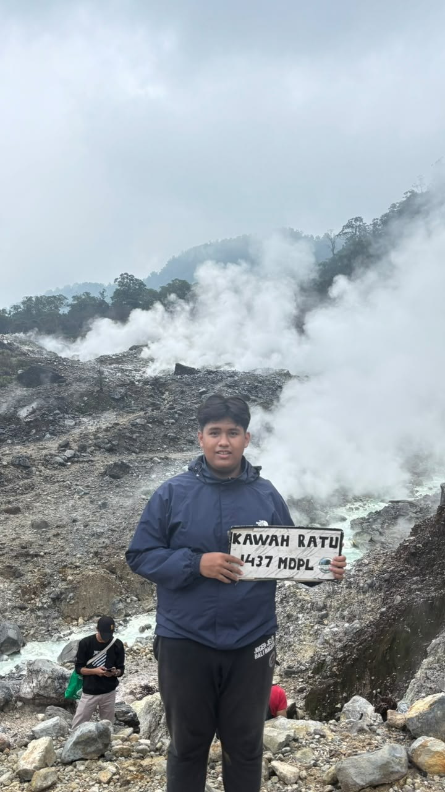
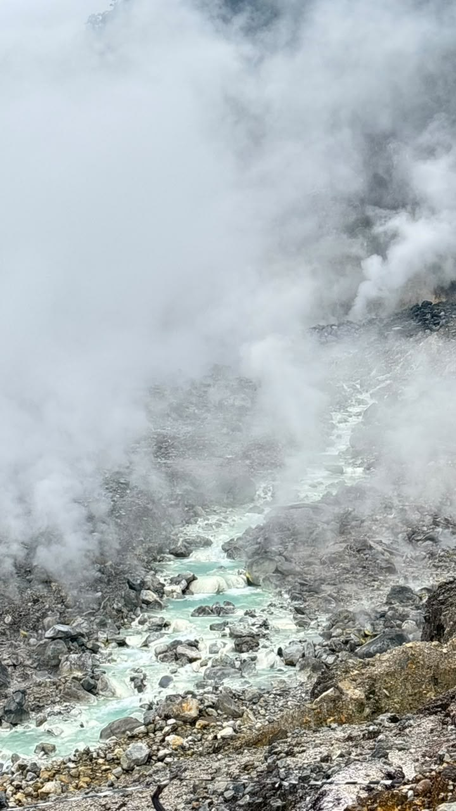

Gunung mana yang cocok buat pemula?
Enam gunung yang sering jadi pilihan pertama
Tabel gunung pemula di Jawa Barat
Angka di bawah cuma perkiraan. Ketinggian dan lama jalan bisa beda tergantung jalur, kecepatan jalan, dan seberapa sering istirahat.
| Gunung | Lokasi | Ketinggian (mdpl) | Lama tracking (perkiraan) | Tingkat |
|---|---|---|---|---|
| Tangkuban Perahu | Bandung Barat | 2.084 | 2 sampai 3 jam | Santai |
| Kawah Ratu (Gunung Salak) | Sukabumi (via Cidahu) | 1.437 (menurut papan di lokasi) | 3 sampai 5 jam | Santai sampai sedang |
| Papandayan | Garut | 2.665 | 3 sampai 5 jam | Santai |
| Puntang | Kabupaten Bandung | 2.222 | 3 sampai 5 jam | Santai sampai sedang |
| Burangrang | Bandung Barat | 2.050 | 4 sampai 6 jam | Sedang |
| Gede | Cianjur, Sukabumi, Bogor | 2.958 | 5 sampai 8 jam (tergantung jalur) | Sedang |
Kawah Ratu, trekking ringan di Gunung Salak
Kawah Ratu ada di lereng Gunung Salak, di perbatasan Bogor dan Sukabumi. Kawah ini bisa dicapai lewat Cidahu (Sukabumi) atau Pasir Reungit (Bogor), dan banyak dipilih buat trekking ringan karena bisa pulang pergi dalam sehari. Di atas sana ada uap belerang, bebatuan, dan aliran air kawah yang warnanya kebiruan.


Hal yang perlu diingat
- Jangan camping di area kawah, karena gas beracun bisa terkumpul di sana.
- Jangan lama-lama di dekat uap belerang.
- Ikuti jalur dan arahan petugas di pos masuk.
Papandayan, cocok buat pertama kali
Papandayan di Garut sering jadi gunung pertama banyak orang. Jalurnya cukup landai dan jelas, akses ke basecamp gampang, dan pemandangannya macam-macam, mulai dari kawah belerang, hutan mati, sampai padang edelweis di Tegal Alun. Pendakian biasanya mulai dari Camp David.
Edelweis itu tanaman yang dilindungi, jadi cukup difoto aja ya.
Update Oktober 2026
Akhir September 2026 sempat muncul fenomena blue fire di area kawah, dan jalur pendakian dibatasi. Sekarang jalur sudah dibuka lagi dengan pemantauan. Pengunjung diminta nggak lama-lama di sekitar kawah, dan camping di Pondok Saladah masih dibatasi (info per pertengahan Oktober 2026). Cek lagi ke pengelola sebelum berangkat.
Gede, kalau mau coba yang lebih panjang
Gunung Gede ada di kawasan Taman Nasional Gunung Gede Pangrango dan jadi salah satu gunung paling ramai di Jawa Barat. Lewat jalur Cibodas treknya relatif lebih landai buat pemula, sedangkan lewat Gunung Putri biasanya lebih cepat sampai ke Alun-Alun Suryakencana.
Yang perlu disiapin
- Booking online lewat pengelola taman nasional sebelum berangkat.
- Latihan fisik dulu, soalnya jalurnya panjang.
- Perlengkapan buat bermalam.
Sumber data
- Gramedia, Orami, Popbela, dan Mojok (rekomendasi dan data gunung).
- IDN Times dan GunungBagging (info Kawah Ratu dan Gunung Salak).
- ANTARA dan Kompas (info jalur Papandayan dibuka kembali, Oktober 2026).